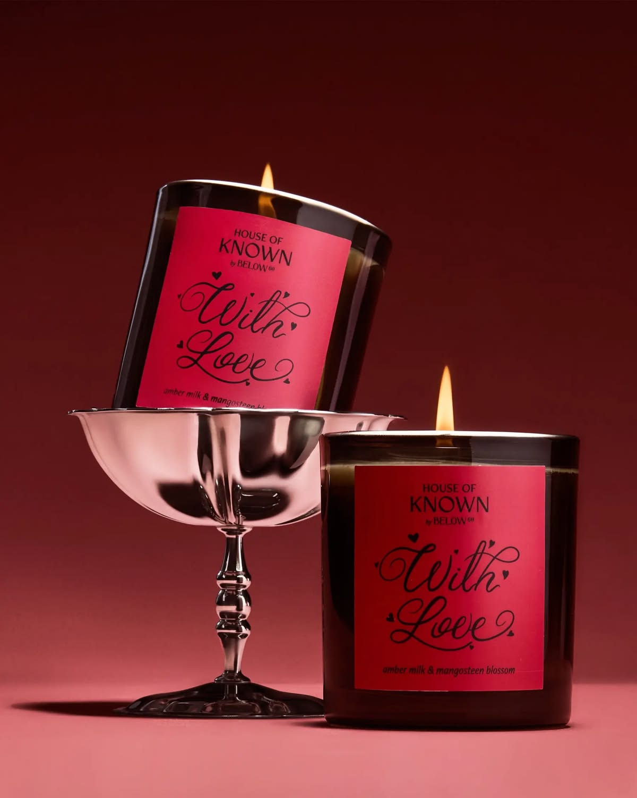
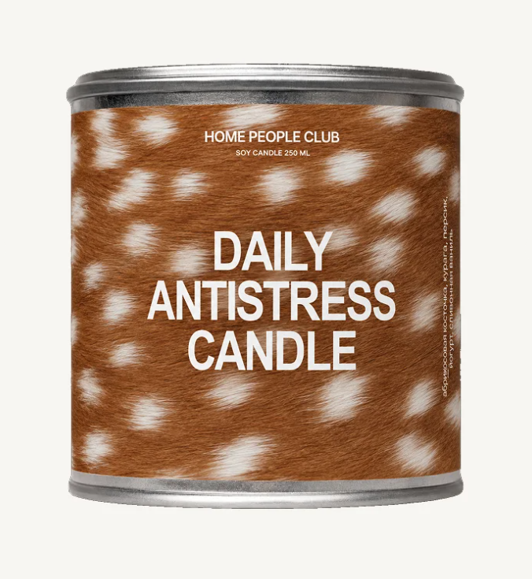
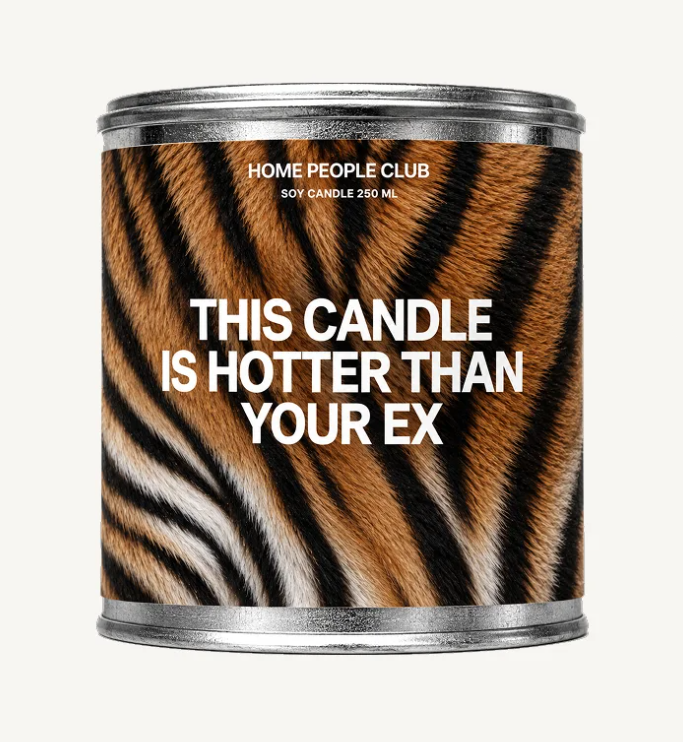
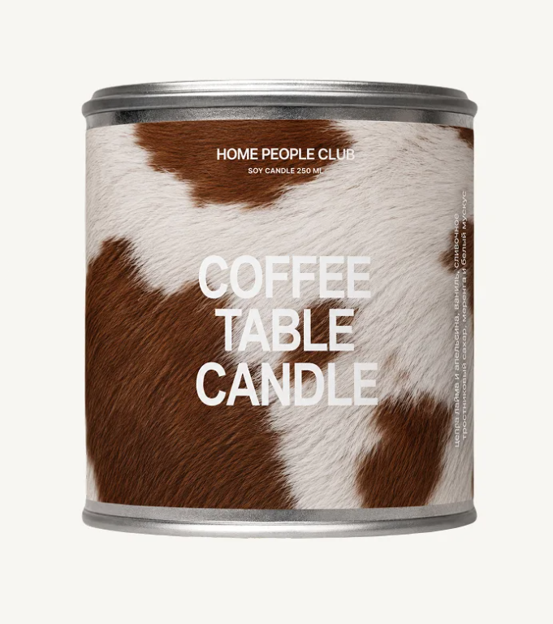
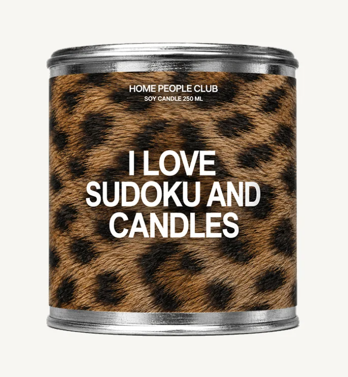
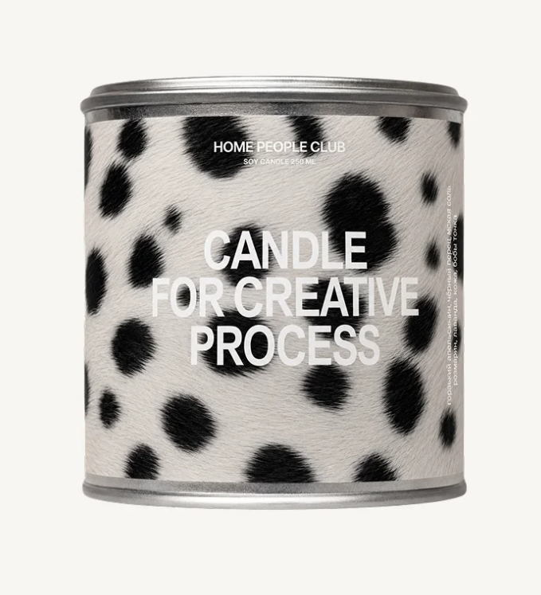
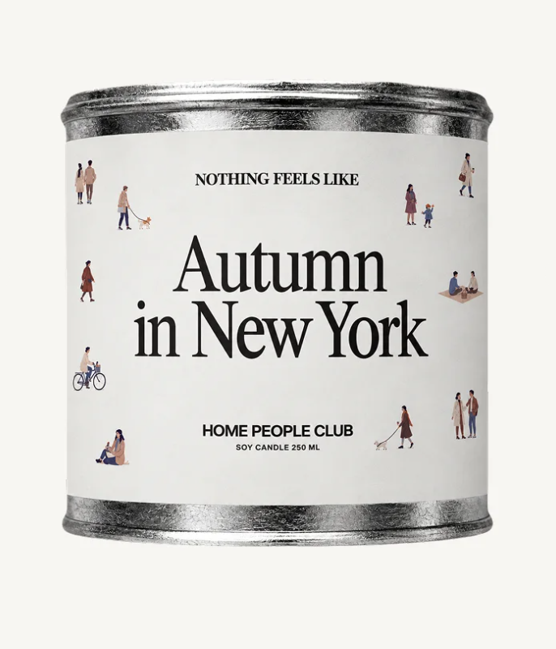

соевый воск
Растительный воск из возобновляемого сырья — мягкое горение и меньше лишнего дыма.
АРХИВ АРОМАТОВ / 2026
Свечи ручной работы для тех моментов, когда день уже не требует ничего.
смотреть каталог↘
СОЗДАНО В НЕБОЛЬШИХ ПАРТИЯХ
01 — О БРЕНДЕ
Я Арина, создательница «После Пяти». Я делаю свечи маленькими партиями — медленно, внимательно и без лишнего шума.
Мне нравится момент, когда дела заканчиваются, свет становится мягче, а пространство вокруг можно настроить под себя. Один аромат — для тишины. Другой — для разговоров до ночи.
узнать больше ↗эко — это не декор
«После Пяти» — маленький эко-бренд про свечи, которые остаются в пространстве дольше одного вечера.
Растительный воск из возобновляемого сырья — мягкое горение и меньше лишнего дыма.
Делаем столько, сколько нужно, чтобы не создавать склад из ненужных вещей.
Металлическую банку можно оставить для мелочей, а упаковку — переработать.
Мы не тестируем свечи и ароматы на животных и выбираем осознанный состав.
02 — КАТАЛОГ
Шесть объектов для разных состояний.
Выбери свой вечер.

001подробнее ↗
002подробнее ↗
003подробнее ↗
004подробнее ↗
005подробнее ↗
006подробнее ↗03 — СОТРУДНИЧЕСТВО
Я создаю ароматические свечи, которые пробуждают воспоминания и эмоции, поэтому мы можем осуществить:
Для ресторанов, кофеен или компаний. Соберу аромат и оформление, которые отражают атмосферу вашего места.
С брендами и блогерами — чтобы соединить ваши идеи с моими ароматами и сделать что-то своё.
Для свадьбы, дня рождения или другого важного вечера — чтобы у гостей остался предмет-воспоминание.
04 — FAQ
Коротко о том, как подружиться со свечой и не испортить ей вечер.
В среднем от 25 до 45 часов — зависит от выбранного объёма и того, как долго ты даёшь ей гореть за один раз.
Начни не с нот, а с настроения: тихий вечер, разговоры до ночи, холодный воздух или желание просто побыть дома.
Перед каждым розжигом подрезай его до 4–5 мм. Так пламя будет ровнее, а свеча — аккуратнее.
Мы используем растительный соевый воск, делаем свечи небольшими партиями, не тестируем их на животных и оставляем банке возможность для повторного использования.
05 — СВЯЗЬ
Оставь заявку — это учебная форма, но мы всё равно сделаем вид, что уже собираем твой заказ.